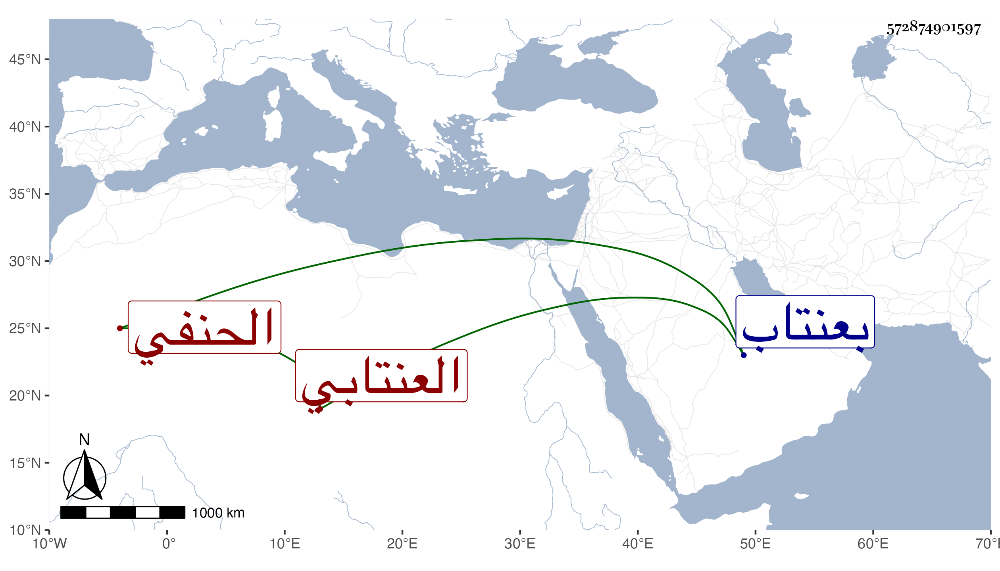

0902Sakhawi.DawLamic.ITO20230111-ara1.EIS1600.572874901597
Biography ID: 572874901597
1193
يوسف بن شرنكار العنتابي الحنفي . ولد سنة ست وستين وسبعمائة وتعانى القراآت فمهر فيها وانتفعوا به وكان يتكلم على الناس بلسان الوعظ فصيح اللسان حلو المنطق مليح الوجه له يد في التفسير . مات سنة اثنتين وعشرين عن خمس وستين سنة . ذكره شيخنا في إنبائه نقلا عن العيني ورأيت بخطي نقلا عن العيني أنه كان فاضلا في بعض العلوم . ومات بعنتاب سنة إحدى وعشرين عن قريب السبعين فالله أعلم .
